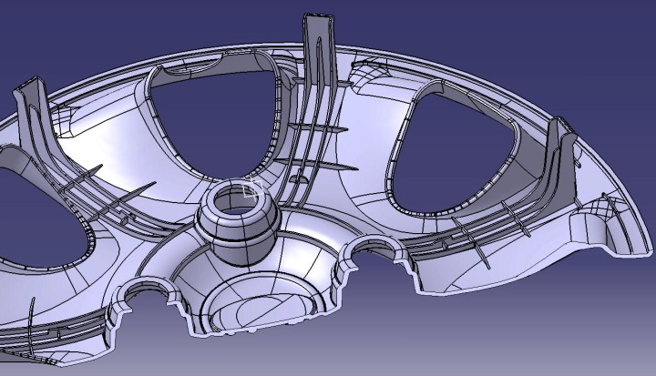

|
3.1. Cidar (et) kalýnlýðý
Uygun koþullar altýnda, cidar kalýnlýðýnýn belirlenmesi, normal olarak malzeme seçimine baðlýdýr. Bazen alan kýsýtlamasý buna mani olur ve malzeme seçimi mevcut çeper kalýnlýðýna göre yapýlýr. Çeper kalýnlýðý aþaðýdaki hususlarýn analizi sonucunda yapýlýr [2]:
Kullaným Ýhtiyaçlarý:
1. Yapý
2. Aðýrlýk
3. Dayaným
4. Ýzolasyon
5. Boyutsal kararlýlýk
Üretim gereksinimleri:
1. Kalýplama
a) Akýþ
b) Katýlaþma
c) Parçanýn kalýptan çýkartýlmasý
2. Birleþtirme:
a) Dayaným
b) Hassasiyet
Bütün bu unsurlar birbirleriyle yakýndan iliþkilidir. Sadece ekonomik bir bakýþ açýsýndan, çok büyük veya çok küçük çeper kalýnlýklarý tasarýmý olumsuz yönde etkileyebilir.
Aþaðýdaki tablolarda çeþitli termoplastik ve termoset malzemeler için minimum,ortalama ve maksimum çeper kalýnlýklarýný vermektedir.
Tablo 3. Çeþitli Termoplastik Malzemeler için Minimum,
Ortalama ve Maksimum Çeper Kalýnlýklarý [2]
Tablo 4. Çeþitli Termoset Malzemeler için Minimum,
Ortalama ve Maksimum Çeper Kalýnlýklarý [2]
Enjeksiyon kalýplamada, cidarlar(çeperler) ve diðer kesitler, tasarýmcý için parçanýn istenilen fonksiyonunu yerine getirmesini saðlayan unsurlardýr. Temel olarak; cidar kalýnlýðý parçanýn þekil deðiþimini, iç gerilmeleri ve çatlamayý ortadan kaldýrmak için olabildiðince üniform yapýlmalýdýr. Aþaðýdaki parça tasarýmýnda üniform çeper kalýnlýðýný saðlamak için tipik metotlarý göstermektedir.
Þekil 3.2. Parça tasarýmýnda uygun et kalýnlýklarýný
saðlamak için tipik metotlar [2]
Farklý cidar kalýnlýklarý kullanýlacaksa, kalýn kesitten ince kesite yumuþak bir geçiþ saðlanmalýdýr. Akýþ doðrultusundaki komþu kalýn ve ince kesitler problem doðurmaktadýr. Bazý durumlarda bu problem, yolluðun kalýn kesite konulmasý dolayýsýyla malzemenin kalýn kesitten ince kesite aktarýlmasýyla giderilebilir [2].
Þekil 3.3 Et Kalýnlýklarýndaki geçiþler

Þekil 3.4 Örnek plastik ürün [5]
3.2 Yuvarlatmalar ve Yarýçaplar
Plastik parçalardaki keskin köþeler, parça hasarlarýna neden olan en önemli etkilerden biridir. Keskin köþelerin giderilmesi bu noktalardaki gerilme yýðýlmalarýný azaltýr ve yüksek yapýsal dayanýma sahip parçalarýn üretilmesine izin verir. Yuvarlatmalar, ergimiþ plastiðin kalýbý doldururken daha düzenli bir yol izlemesini ve parçanýn kalýptan daha kolay çýkarýlmasýný saðlar. 0.5 - 0.76 mm'lik tavsiye minimum yarýçap, keskin kenarlar gereken yerlerde bile kullanýlabilir [2]. Yarýçaplar, kalýplarýn daha ekonomik ve uzun ömürlü olmasýný saðlar.
Parça Tasarýmýnda yarýçap ve yuvarlatmalarýn birçok yararý vardýr [2]:
1) Kalýplanmýþ parça daha dayanýklýdýr.
2) Keskin kenarlarýn giderilmesi otomatik olarak çentik hassasiyetinden dolayý meydana gelen çatlamalarý azaltýr, ani þok ve darbelere karþý olan toplan direnci artýrýr. Ýçteki bütün keskin köþelerin 0,381 mm'lik yarýçapla yuvarlatýlmasý dayanýmda büyük iyileþmeler saðlar.
3) Plastiðin akýþ davranýþý büyük oranda iyileþir. Yuvarlatýlmýþ köþeler, plastiðin bütün kesite üniform, gecikmemiþ ve gerilemelere daha az maruz akýþýna izin verir ve kalýplanmýþ kesitin üniform bir yoðunluða sahip olmasý saðlar.
4) Kalýp parçalarý, boþluklar daha dayanýklý olacaktýr. Çünkü yuvarlatma ile çentik hassasiyeti nedeniyle ortaya çýkan gerilme yýðýlmasý azaltýlmýþ.
Þekil 3.5 Yuvarlatýlma yapýlmamýþ hatalý tasarým yapýlmýþ plastik ürün [5]
3.3 Federler (Kaburgalar)
Kaburgalarýn görevi, çeper kalýnlýðýný arttýrmadan parçanýn rijitliðini ve dayanýmýný arttýrmaktýr. Kaburgalarýn uygun kullanýmýyla, çoðunlukla soðuma sýrasýnda meydana gelen çarpýlmalar önlenir. Bazý durumlarda da, kalýplama esnasýnda malzeme akýþýný kolaylaþtýrýr.
Þekil 3.6 Kalýn ve Ýnce Kaburgalar [2]
Genel olarak, kaburganýn taban geniþliði, kaburganýn tutturulduðu çeperin kalýnlýðýndan az olmalýdýr. Bu durum aþaðýdaki þekilde gösterilmiþtir. R1 çemberi, kaburga ile çeperin birleþtiði yere konulursa kalýnlýlýðýn %50 oranýnda artacaðý görülecektir ve bu normal kalýplama koþullarýnda yüzeyde çekme çukurcuklarý meydana getirecektir. Kaburganýn taban geniþliði çeper kalýnlýðýnýn yarýsýna düþürüldüðünde birleþme yerindeki kalýnlýk artýmý %20'den daha azdýr.
Þekil 3.7 Uygun olan ve olmayan kaburga boyutlarý [2]
Çýkýntýlar ve kabartýlar alt yüzeylerde çekme çukurlarýna sebep olabilirler. Bu yüzden oluk veya kaburgalar böyle çýkýntýlarýn altýndaki yüzeylere konulmalýdýr. Aþaðýdaki þekilde kabartýlarýn yüzey üzerindeki etkileri gösterilmiþtir. Ortadaki þekilde çekme çukurcuðu gösterilmiþtir. Bu problem parça alt yüzeyine küçük kaburgalar konularak (oluklandýrýlarak) giderilebilir [2].
Þekil 3.8. Büyük Kabartýlarýn Yüzey Üzerindeki Etkileri
|